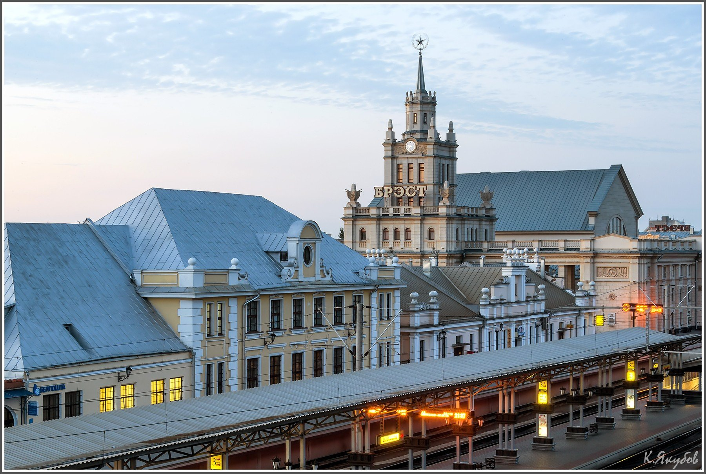
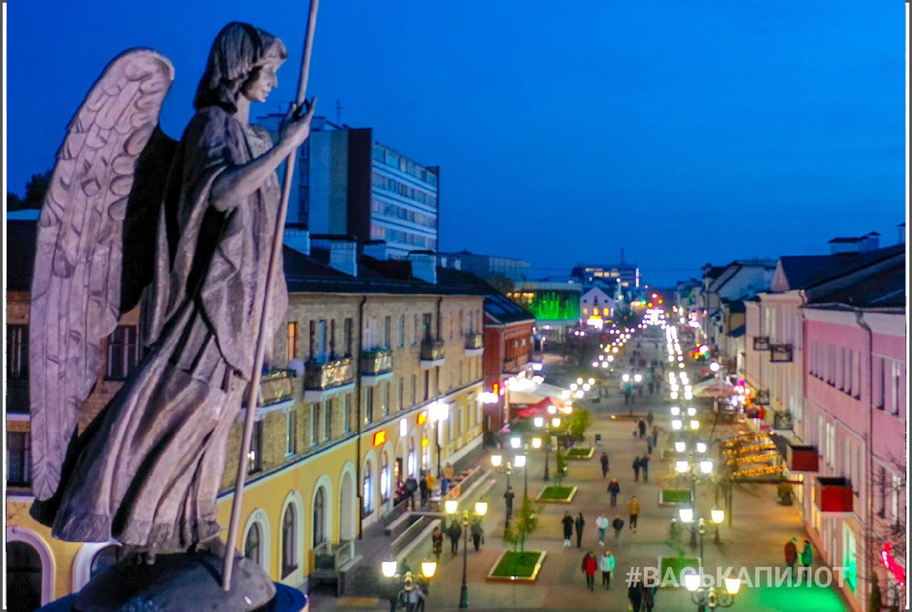
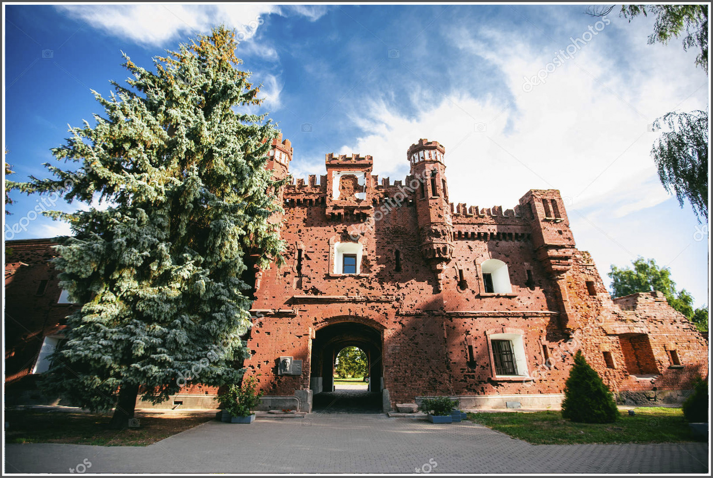
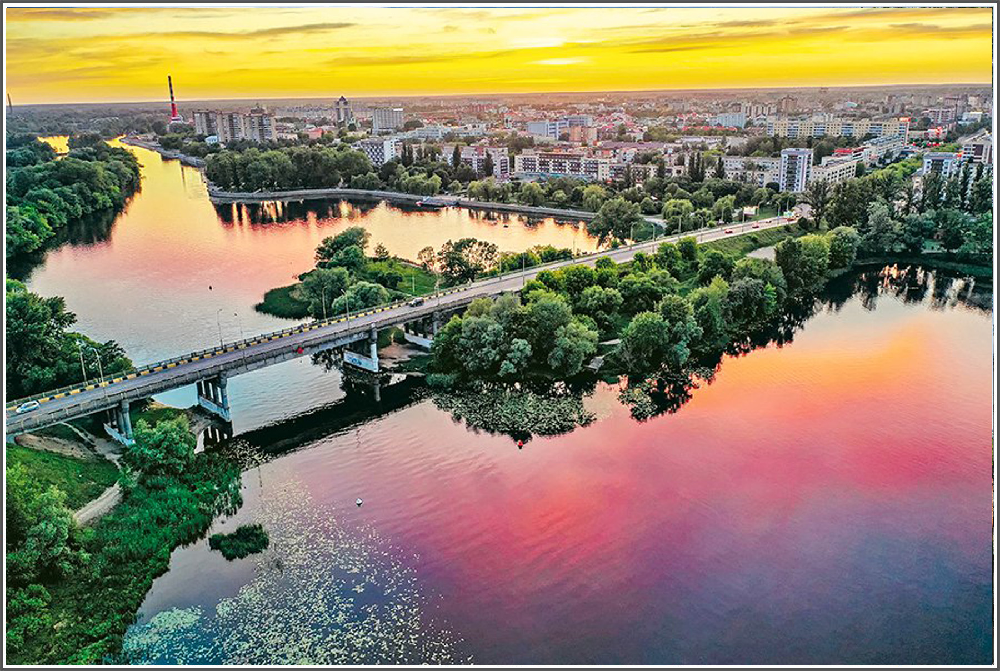

Historia |
Zabytek |
Brześć, do 1923 Brześć Litewski, Brześć nad Bugiem – miasto na Białorusi, u ujścia Muchawca do Bugu, siedziba administracyjna obwodu brzeskiego i rejonu brzeskiego. Ośrodek przemysłowy, węzeł kolejowy i drogowy na granicy z Polską, port rzeczny, port lotniczy; uniwersytet (1995), politechnika (1989); ośrodek kultury polskiej na Białorusi, polski konsulat generalny; 339,7 tys. mieszkańców (2020).
Miasto królewskie, położone w końcu XVIII wieku w powiecie brzeskolitewskim województwa brzeskolitewskiego. Miejsce obrad Sejmu Wielkiego Księstwa Litewskiego. Miejsce obrad sejmików ziemskich powiatu brzeskolitewskiego od XVI wieku do pierwszej połowy XVIII wieku. Do 1945 w Polsce, od 1921 stolica województwa poleskiego, siedziba powiatu brzeskiego.
   
Geograficzne centrum obwodu brzeskiego znajduje się 320 km na południowy zachód od Mińska, na zachodnim skraju Polesia, które jest podmokłą płaską Niziną, dość wylesioną z powodu wpływu człowieka. Topografia terytorium, na którym leży Brześć, jest płaska (Wysokość bezwzględna od 123 m, wysokość ucięcia Zachodniego Bugu, do 130 m), lekko opadająca do równiny zalewowej Mukhavets. Na zachodnim krańcu miasta Mukhavets wpada do zachodniego Bugu, rozwidlając się na dwa ramiona. Na terenie Brześcia Muchawiec nie przyjmuje dopływów. Na północnym skraju Brześcia przepływa niewielka Rzeka leśna, prawy dopływ Bugu Zachodniego.
Brześć znajduje się w strefie czasowej wyznaczonej przez międzynarodowy standard jako Wschodnioeuropejski czas letni (UTC+3).
Powierzchnia miasta to 14 527 ha, dość duży udział terenów zielonych[81]. Miasto położone jest w otoczeniu strefy leśno-parkowej o powierzchni 2 500 ha. na terenie Brześcia znajduje się szereg parków (m.in. park im. 1 maja, Park żołnierzy-internacjonalistów itp.) i skwerów. Począwszy od 15 października 2012 r. granice miasta i Rejonu Brzeskiego zostały zmienione decyzją Brzeskiej obwodowej Rady Deputowanych z 11 września 2012 r. Nr 219[82], zgodnie z którym do granic miasta Brześcia włączono znajdujące się wcześniej w obwodzie brzeskim (Telmiński sielsowiet) grunty o łącznej powierzchni 85,8281 ha (0,86 km2), w tym 85,7071 ha — grunty komunalnego jednolitego przedsiębiorstwa rolnego "sowchoz brzeski" oraz 0,121 ha — grunty komunalnego jednolitego przedsiębiorstwa "brzeski Miejski Zarząd budownictwa kapitałowego", co daje w 612 ha lub 146,12 kilometrów kwadratowych.
Bibliografia